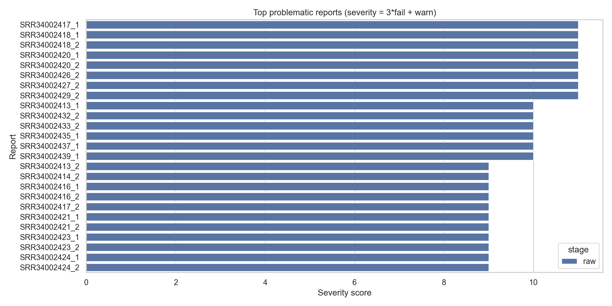
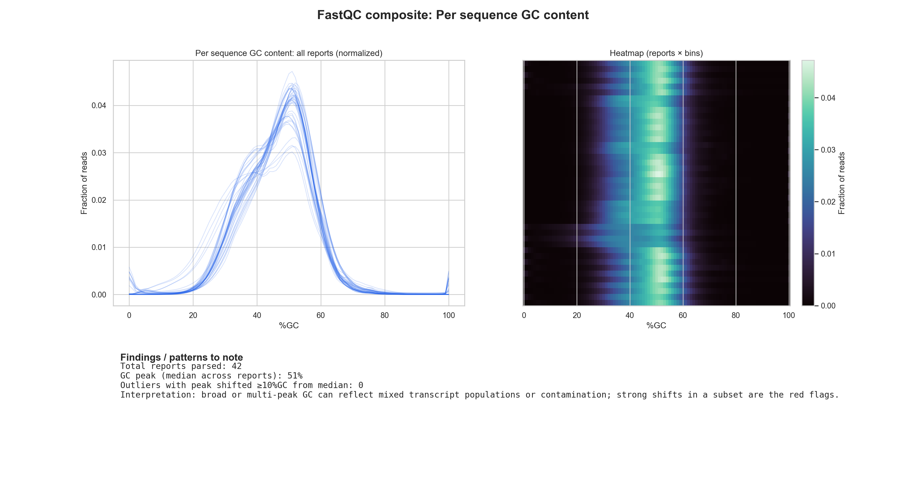

PRJNA1277581; GEO GSE299935): 30 paired-end SRRs (SRR34002410–SRR34002439) into /home/zebrafish/sra_runs./home/zebrafish/fastqc_out and copied the artifacts into our local qc_bundle.summary.txt) and used that to identify the main issues and which runs are most problematic.FastQC highlights (run-level; worst-of-mates)
- sequence_duplication_levels: FAIL in 30/30 SRRs
- per_sequence_gc_content: 18 FAIL, 12 WARN (0 PASS)
- adapter_content: strong signal in a subset (16 FAIL; 2 WARN)
Most problematic SRRs by severity (fail*3 + warn, summed across mates):
SRR34002418, SRR34002420, then SRR34002410/15/17/26/27/28/29

Tools used: SRA Toolkit (fastq-dump / fasterq-dump), FastQC, and FASTX. Workflow: download → FastQC → (FASTX trim) → re-FastQC → summarize results.
# Download (SRA Toolkit; example using fastq-dump + gzip)
fastq-dump --split-files --gzip -O /home/zebrafish/sra_runs SRR34002437
# FastQC (paired-end)
fastqc -t 1 -o /home/zebrafish/fastqc_out /home/zebrafish/sra_runs/SRR34002437_1.fastq.gz /home/zebrafish/sra_runs/SRR34002437_2.fastq.gz
# FASTX trim (example quality trimming; writes to a separate directory)
zcat /home/zebrafish/sra_runs/SRR34002437_1.fastq.gz | fastq_quality_trimmer -Q33 -t 20 -l 30 | gzip -c > /home/zebrafish/fastx_out/SRR34002437_1.trim.fastq.gzWe wrapped these steps into a resumable pipeline with two workers (download + FastQC) and per-member run lists so the team could run the process consistently and monitor it with simple logs.
ACC=PRJNA1277581 MEMBER=samuel RUNS_FILE=/home/zebrafish/split_run_ids/runs.member.samuel.txt \
PIPE_DIR=/home/pzg8794/sra_runs_pipeline_samuel DUMP_THREADS=1 FASTQC_THREADS=1 \
/home/pzg8794/zebrafish/scripts/sra_runs_pipeline_sra3.sh start
I parsed FastQC summary.txt from each *_fastqc.zip, collapsed mates to one SRR-level status per module (worst-of-mates), and ranked runs by severity (3×FAIL + WARN) to prioritize cleanup.
python3 Semester5/BIOL550/group_project/zebrafish/scripts/fastqc_bundle_summarize.py \
--qc-bundle Semester5/BIOL550/group_project/qc_bundle \
--out-dir Semester5/BIOL550/group_project/qc_bundle/qc_analysis \
--stage rawPRJNA1277581 / GSE299935) but still need to confirm the exact publication./home/zebrafish/fastx_out (keep raw FASTQs unchanged).